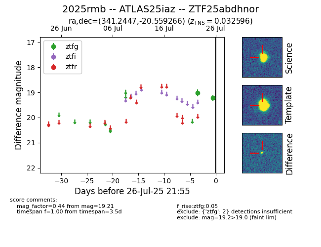

Target 2025rmb at 2025-07-26 21:55, see:
FINK: fink-portal.org/2025rmb
Lasair: lasair-ztf.lsst.ac.uk/objects/2025rmb
ALeRCE: alerce.online/object/2025rmb
TNS: wis-tns.org/object/2025rmb
YSE: ziggy.ucolick.org/yse/transient_detail/2025rmb
alt names
ZTF25abdhnor (ztf,fink)
2025rmb (tns,yse)
ATLAS25iaz (atlas)
coordinates:
equatorial (ra, dec) = (341.2447,-20.55927)
galactic (l, b) = (38.8685,-60.43140)
photometry
last ztfg=19.21
2 ztfg detections
